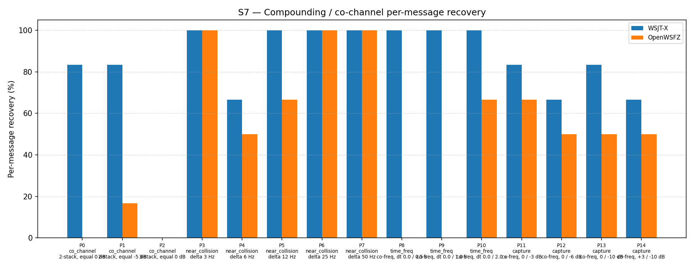

| Field | Value |
|---|---|
| Run date | 2026-06-13 |
| OpenWSFZ SHA | b5477b37f156ef48a0a0aeaa1810f95e8d4fca5c |
| WSJT-X version | WSJT-X 2.7.0 (inferred from binary date 2025-02-04) |
| Report version | v2 (NFR-023 compliant) |
| Change | diag-d001-h5-suppression-tuning |
| Run type | Single run — H5 validation |
Note: The harness-generated
report.mdin this directory shows "Overall verdict: PASS". That verdict is the harness default and does not evaluate the H5 acceptance gates. This NFR-023-compliantreport-v2.mdis the authoritative document. The correct verdict is H5 REJECTED — see §4 below.
H5 (diag-d001-h5-suppression-tuning, shim 20260011): the soft SNR-scaled suppression
ramp window is shifted 10 dB toward lower SNRs relative to H4:
| Constant | H4 (20260010) | H5 (20260011) |
|---|---|---|
K_SOFT_SUPP_SNR_MIN_DB |
−5.0 dB | −15.0 dB |
K_SOFT_SUPP_SNR_MAX_DB |
+15.0 dB | +5.0 dB |
| Suppression at 0 dB SNR | 25% | 75% |
The ramp width (20 dB) is preserved; only the operating window shifts. The hypothesis is that 75% suppression at the S7 test SNR of 0 dB will more completely clear the first decoded signal's waterfall contribution before pass 1, allowing pass 1 to recover the second signal in the time_freq family (P9/P10).
Null hypothesis H5₀: Shifting the ramp to [−15, +5] does not improve S7 recovery; the result fails gate (a) or gate (b) relative to the H4 baseline.
Alternative hypothesis H5₁: The shift improves time_freq recovery sufficiently that S7 overall ≥ 56.99% with no per-part regressions.
| Defect | Description |
|---|---|
| D-001 (High) | Co-channel / weak-signal decode gap vs WSJT-X |
Synthetic — signals generated by qa/rr-study/synth/ (clean-room Python FT8 encoder,
Q-prefix callsigns only per NFR-021). Fresh AWGN seeds drawn for this run.
Seed values recorded in S7_matched.csv.
| Parameter | Value |
|---|---|
| FT8_SHIM_VERSION | 20260011 |
| K_MAX_PASSES | 2 |
| K_SOFT_SUPP_SNR_MIN_DB | −15.0 dB (H5: was −5.0 dB in H4) |
| K_SOFT_SUPP_SNR_MAX_DB | +5.0 dB (H5: was +15.0 dB in H4) |
| K_MIN_SCORE_PASS2 | 1 |
| K_MAX_CANDIDATES_PASS2 | 200 |
| K_LDPC_ITERATIONS_PASS2 | 50 |
| SNR constant | −26.5 dB |
| Inter-pass mechanism | spectrogram-domain soft-SNR tile suppression |
b5477b3 (subject)| Run | SHA | Shim | OW overall | Outcome |
|---|---|---|---|---|
| Baseline | e4a3982 |
20260006 | 51/93 = 54.84% | reference |
| H2 (3-pass) | 3ecf8ae |
20260007 | 47/93 = 50.54% | REJECTED −4.30 pp |
| H3 (PCM CP-FSK SIC) | da133f4 |
20260008 | 38/93 = 40.86% | REJECTED −13.98 pp |
| H3b (PCM GFSK SIC) | 30972ba |
20260009 | 35/93 = 37.63% | REJECTED −17.21 pp |
| H4 R0 | dc99567 |
20260010 | 40/93 = 43.01% | Rejected — seed variability |
| H4 R1 (active baseline) | cd9f06b |
20260010 | 53/93 = 56.99% | ACCEPTED |
| H5 (this run) | b5477b3 |
20260011 | 43/93 = 46.24% | — |
| Overlap family | WX baseline | WX H5 | OW H4 R1 | OW H5 | OW delta |
|---|---|---|---|---|---|
| co_channel | 10/21 = 47.62% | 10/21 = 47.62% | 0/21 = 0.00% | 1/21 = 4.76% | +4.76 pp |
| near_collision | 30/30 = 100.00% | 28/30 = 93.33% | 27/30 = 90.00% | 25/30 = 83.33% | −6.67 pp |
| time_freq | 18/18 = 100.00% | 18/18 = 100.00% | 10/18 = 55.56% | 4/18 = 22.22% | −33.33 pp |
| capture | 13/24 = 54.17% | 13/24 = 54.17% | 16/24 = 66.67% | 13/24 = 54.17% | −12.50 pp |
| all | 71/93 = 76.34% | 69/93 = 74.19% | 53/93 = 56.99% | 43/93 = 46.24% | −10.75 pp |

| Part | Family | Condition | WX H4 R1 | WX H5 | OW H4 R1 | OW H5 | OW delta | Gate (b) |
|---|---|---|---|---|---|---|---|---|
| P0 | co_channel | 2-stack, equal 0 dB | 4/6 | 5/6 | 0/6 | 0/6 | 0 | PASS |
| P1 | co_channel | 2-stack, equal −5 dB | 5/6 | 5/6 | 0/6 | 1/6 | +1 | PASS |
| P2 | co_channel | 3-stack, equal 0 dB | 0/9 | 0/9 | 0/9 | 0/9 | 0 | PASS |
| P3 | near_collision | delta 3 Hz | 6/6 | 6/6 | 6/6 | 6/6 | 0 | PASS |
| P4 | near_collision | delta 6 Hz | 6/6 | 4/6 | 4/6 | 3/6 | −1 | FAIL |
| P5 | near_collision | delta 12 Hz | 6/6 | 6/6 | 6/6 | 4/6 | −2 | FAIL |
| P6 | near_collision | delta 25 Hz | 6/6 | 6/6 | 5/6 | 6/6 | +1 | PASS |
| P7 | near_collision | delta 50 Hz | 6/6 | 6/6 | 6/6 | 6/6 | 0 | PASS |
| P8 | time_freq | co-freq, dt 0.0/0.5 s | 6/6 | 6/6 | 0/6 | 0/6 | 0 | PASS |
| P9 | time_freq | co-freq, dt 0.0/1.0 s | 6/6 | 6/6 | 5/6 | 0/6 | −5 | FAIL |
| P10 | time_freq | co-freq, dt 0.0/2.0 s | 6/6 | 6/6 | 5/6 | 4/6 | −1 | FAIL |
| P11 | capture | co-freq, 0/−3 dB | 5/6 | 5/6 | 5/6 | 4/6 | −1 | FAIL |
| P12 | capture | co-freq, 0/−6 dB | 4/6 | 4/6 | 5/6 | 3/6 | −2 | FAIL |
| P13 | capture | co-freq, 0/−10 dB | 3/6 | 5/6 | 3/6 | 3/6 | 0 | PASS |
| P14 | capture | +3/−10 dB | 4/6 | 4/6 | 3/6 | 3/6 | 0 | PASS |
The repeat-run criterion specified in the H5 design (§ Risks) requires gate (a) to fail by ≤ 2 decodes and all regressing parts to be marginal performers (3–5/6 at baseline). Neither condition is met:
No repeat run is warranted. The H5 rejection is a genuine regression.
The regression pattern is fully consistent with over-suppression from the new ramp [−15, +5]:
time_freq regression (P9 −5, P10 −1): The two signals in P9 (dt = 1.0 s) share approximately 47 of their 79 waterfall symbols. Pass 0 decodes the first signal (0 dB SNR); its tiles receive 75% suppression. The second signal's energy in the shared symbols is also reduced by 75%, pushing it below the pass-1 decode threshold (0/6 across all seeds). P10 (dt = 2.0 s, less overlap) shows a smaller regression (−1).
capture regression (P11 −1, P12 −2): In capture scenarios the strong signal (0 dB) is decoded in pass 0 and suppressed; pass 1 seeks the weak signal. The strong and weak signals occupy the same frequency bin — their tile energy is superimposed. With 75% suppression of the combined tile energy, the weak signal's contribution is also reduced. The weak signal at −6 dB (P12) now receives the equivalent of ~45% suppression of its own energy, reducing pass-1 recovery compared to H4 (where the weak signal's tile energy was essentially unaffected by the ramp).
Additionally, the H5 ramp now extends suppression down to −15 dB, where H4 applied none (protected floor was −5 dB). Any signal decoded with reported SNR between −15 and −5 dB now receives partial tile attenuation, exposing more signals to collateral suppression.
near_collision regression (P5 −2, P4 −1): P4 (6 Hz separation) has been consistently marginal (3/6 baseline, 4/6 H4 R1). P5 (12 Hz separation) regressed from 6/6 to 4/6. At 12 Hz the signals are ~4 bins apart at freq_osr=2; the ±1-bin suppression zone does not directly clip P5's second signal. The P5 regression may contain a seed-variability component but is not inconsistent with increased spectral leakage from the more aggressive suppression at adjacent frequency bins. Reclassification as seed variability does not change the overall verdict — gate (a) and gate (b) fail on the structural regressions alone.
| Metric | Value | Threshold | Verdict |
|---|---|---|---|
| Gate (a) — overall recovery | 43/93 = 46.24% | ≥ 53/93 = 56.99% | FAIL (−10 decodes) |
| Gate (b) — P4 | −1/6 vs H4 R1 | ≥ 0 | FAIL |
| Gate (b) — P5 | −2/6 vs H4 R1 | ≥ 0 | FAIL |
| Gate (b) — P9 | −5/6 vs H4 R1 | ≥ 0 | FAIL |
| Gate (b) — P10 | −1/6 vs H4 R1 | ≥ 0 | FAIL |
| Gate (b) — P11 | −1/6 vs H4 R1 | ≥ 0 | FAIL |
| Gate (b) — P12 | −2/6 vs H4 R1 | ≥ 0 | FAIL |
| Repeat-run criterion | Gate (a) fails by 10 (criterion: ≤ 2); P9 collapses uniformly | — | Not met — no repeat |
| H5 hypothesis | Rejected | — | FAIL |
Overall verdict: FAIL — H5 REJECTED. Shifting the ramp to [−15, +5] (75% suppression at 0 dB SNR) causes severe regressions in the time_freq and capture families. The protected zone below −5 dB is critical: moving it to −15 dB introduces collateral suppression of borderline signals and of weak co-channel signals in capture scenarios. The H4 baseline (shim 20260010, 56.99%) remains the active S7 baseline.
H5 rejected. Root cause: the ramp shift to [−15, +5] is too aggressive. The 75% suppression at 0 dB SNR over-suppresses shared tile energy in the time_freq family and the weak signal's tile contribution in the capture family.
Key constraint confirmed by H5: The minimum suppression threshold (K_SOFT_SUPP_SNR_MIN_DB)
must not move below −5 dB. Moving it to −15 dB introduces partial suppression of signals
in the −15 to −5 dB band that previously received no attenuation — these signals include
the weak co-channel signal in capture scenarios and contribute to time_freq collateral loss.
Recommended next step — H5b: asymmetric ramp tuning. A narrower experiment adjusting
only K_SOFT_SUPP_SNR_MAX_DB (lowering from +15 dB to +8–10 dB) while leaving
K_SOFT_SUPP_SNR_MIN_DB fixed at −5 dB:
| Candidate | K_MIN |
K_MAX |
Suppression at 0 dB | Protected below |
|---|---|---|---|---|
| H4 baseline | −5.0 dB | +15.0 dB | 25% | −5 dB |
| H5b-A (recommended) | −5.0 dB | +10.0 dB | 33% | −5 dB |
| H5b-B (more aggressive) | −5.0 dB | +8.0 dB | 38% | −5 dB |
At [−5, +10]: 33% suppression at 0 dB; full suppression at +10 dB (not +15 dB). This increases tile clearance for well-decoded signals while preserving the −5 dB protection floor that H5 confirmed is critical.
The improvement from H4 to H5b-A may be modest (25% → 33% at the critical 0 dB point), but the risk of regression is substantially lower than H5's 75%.
Requires Captain approval before H5b is designed and authorised.